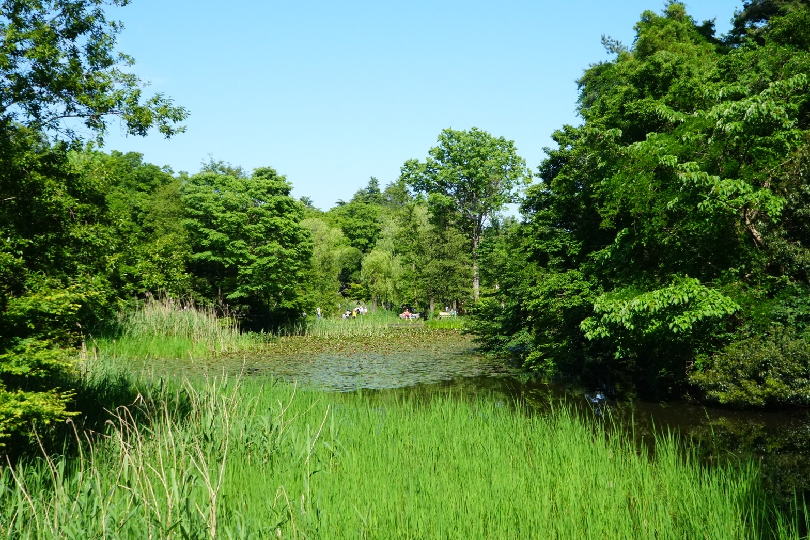
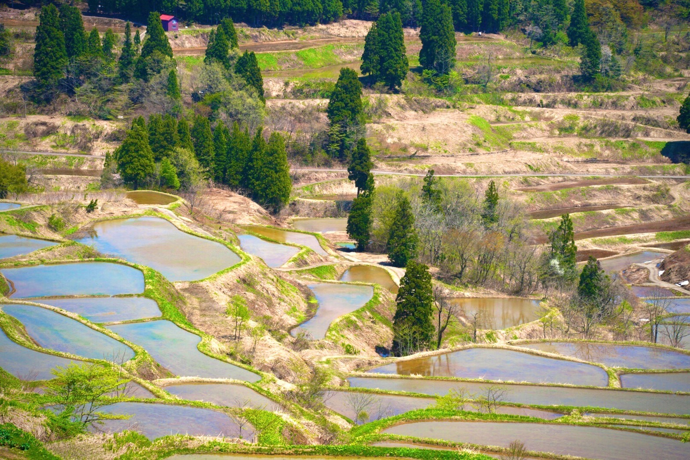
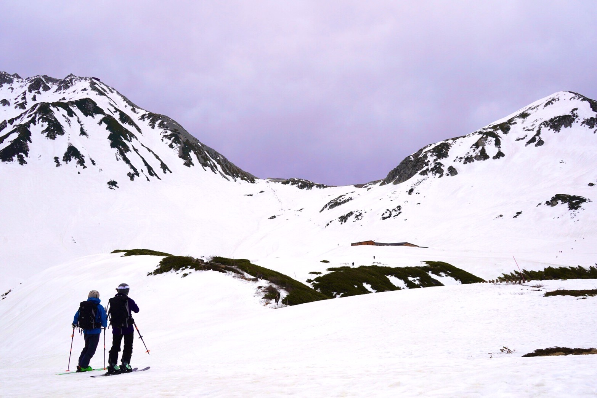

-Profile-
私について
東京の私立大学に通っている大学学部3年生です。
大学では地理を学んでおり、自然地理学を専攻しています。
学ぶ内容は地形、水文、気候、環境保全、地理情報などです。現在所属しているゼミでは南西諸島のサンゴ礁の地形や地殻変動の研究をしています。
サークルでは写真部に属しており、
私はその中で幹部をやらせていただいています。SNSやホームページの運営を行っており、責任を持って取り組んでいます。
プロフィール
居住地:「東京都練馬区石神井町（１５年くらい住んでいます）」
完璧ではないが使えそうな言語
「HTML,CSS,Javascript」
すこしだけ触れたことのある言語
「Python(大学の授業・ゼミなどで使用)
PHP（WordPressで使用）」
趣味
「写真撮影（特に風景）,公共交通機関をつかった旅行,漫画,アニメ,ゲームなど」
昔していた習い事（小学生）
「テニス,そろばん,水泳,工作,絵画（これは高校1年生までやってました）」
部活動（中学～高校）
「ソフトテニス→硬式テニス」
バイト歴
「ケンタッキー・フライド・チキン（ひたすらチキンを揚げていました）→出版社で事務関係の仕事→スーパーマーケットで品出し（現在）」
私が目指すエンジニア像
わかりやすく、快適なものを作る

世界的にあらゆるものでIT化が進んでいる一方、日本や欧州などの先進国では少子高齢化が進んでいます。
私はこのような状況で日本で多くの人にitサービスを利用してもらうには主に2つの要素が大切であると考えています。
1つ目は『わかりやすさ』です。わかりやすく、直感的なデザインであれば、
こどもや高齢者、機械が苦手な方なども不自由なく利用することができ、ITサービスを大きく広めることができるとおもいます。
2つ目は『快適さ』です。ここでいう『快適さ』とは利用者にストレスを感じさせないようなスムーズなサービス作りを心がけ、また利用したいと思わせることです。
以上の2つの価値観を軸として、一流のエンジニアになれるよう様々なスキルを学び、磨いていきたいです。
伸ばしたい能力
コピペに頼らないコード力
独学では本やインターネットからの情報を頼りに様々な小さいパーツをひとつの作品に取り付けるという手法をとっていることがとても多く、上達する中で大きな壁になっています。
これからは、できるだけコピペに頼らず、自分で一からのコーディングができるよう思考力などを磨いていきたいです。